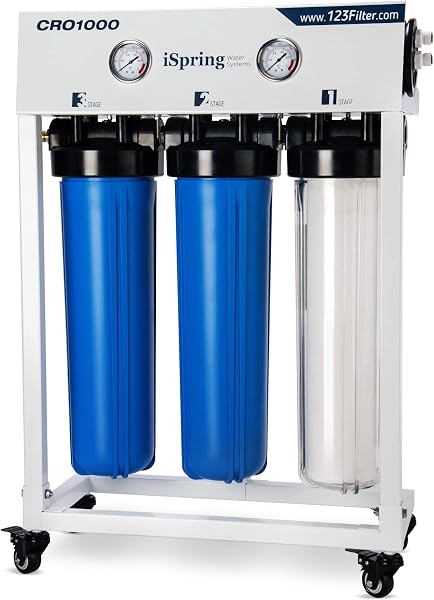
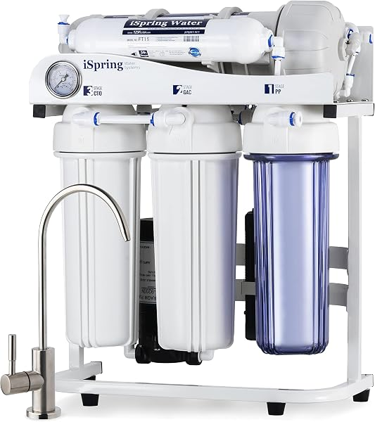
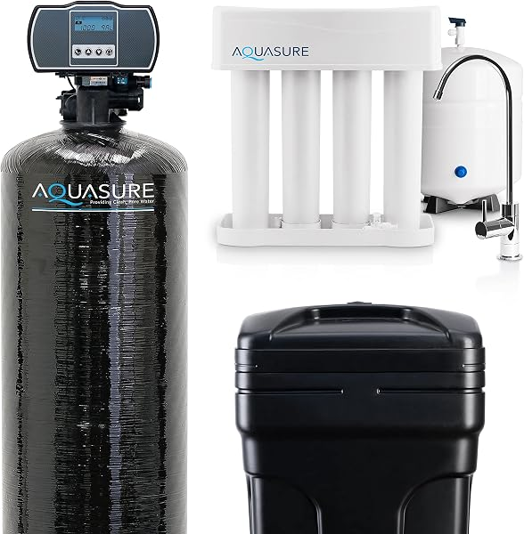

Best Whole House Reverse Osmosis Systems in 2026 (Ranked & Compared)
PureFlow Lab is reader-supported. We may earn a commission when you buy through links in this guide — at no extra cost to you. As an Amazon Associate, we earn from qualifying purchases. See our Disclosure for details.
Top Picks (At a Glance)
Quick links to the systems we recommend most. Prices shown on click-through.

US Water Systems Defender Whole House RO
Complete pre-engineered package — pre-filtration, membrane, and pump matched and shipped together — for under $1,000. The best price-to-completeness ratio in the category. ~$998.34 direct.
Best High-Capacity (Larger Homes)

iSpring CRO1000 — 1,000 GPD Commercial Tankless
1,000 GPD tankless system designed for whole-house residential or small-business use. Right pick for 5+ person households, larger homes, or anyone wanting serious capacity headroom. ~$1,205 at last check, 4.5 stars.
Check Price on Amazon →
iSpring RCB3P — 300 GPD Light Commercial Tankless
Amazon’s Overall Pick. 300 GPD, tankless design, 1.5:1 pure-to-drain ratio, booster pump and pressure gauge included. The right entry-level choice for 2-3 person households. ~$601.99.
Check Price on Amazon →
iSpring RCS5T — 500 GPD Commercial RO
Same iSpring architecture as the RCB3P, stepped up to 500 GPD for 3-4 person households. ~$599.99, 4.6 stars.
Check Price on Amazon →
Crystal Quest Whole House RO (400-5,000 GPD)
The flagship pick for large homes or specialized contamination. Configurable capacity, storage tanks up to 550 gallons, matched booster pumps. $2,000-$8,000+ depending on configuration.
Best Budget All-in-One

Aquasure 64K Whole House Bundle — Softener + RO
64,000-grain whole-house water softener plus 75 GPD RO drinking system in one bundle. Right pick if you have hard water AND want RO drinking water and prefer everything from one purchase. ~$860, 4.4 stars.
Check Price on Amazon →TL;DR: For most homeowners committed to whole-house RO, the US Water Systems Defender at $998 is the strongest pick — pre-engineered package, established water-treatment manufacturer, complete system in one purchase. For larger homes needing more capacity, step up to the iSpring CRO1000 at 1,000 GPD ($1,205). On a tight budget with hard water in the mix, the Aquasure 64K bundle combines a softener and 75 GPD RO drinking system for $860. If you’re building a custom configuration or have a large home with specialized contamination, configure a Crystal Quest system. Before you commit, read our whole house RO complete buyer’s guide and our whole house vs under-sink RO comparison — for most homeowners, a whole-house carbon filter plus under-sink RO is actually the right answer at a fraction of the cost.
You’ve decided whole-house reverse osmosis is the right call for your situation, and now you need to pick a system. This guide compares the six systems worth seriously considering in 2026 — ranked by capacity, configuration, and use case rather than as a single “best overall” list, because the right system genuinely depends on your specific situation.
This article is a product-focused comparison. If you’re still deciding whether whole-house RO makes sense, read our complete buyer’s guide first — it covers the strategic decision (whether to go whole-house vs hybrid vs under-sink) before getting into specific products.
How We Picked
We started with every whole-house RO product doing meaningful sales volume on Amazon and from established water-treatment manufacturers (US Water Systems, Crystal Quest, Pelican, SpringWell, Aquasana). We narrowed by:
- Real residential usability — many “whole house RO” products on the market are actually under-sink units mislabeled. We filtered for systems with capacity (300+ GPD) and architecture (tankless or paired with proper storage) suitable for whole-home use.
- Proper pre-filtration architecture — RO membranes are destroyed by chlorine without carbon pre-treatment. Systems we recommend either include pre-filtration or have clear documentation for pairing it.
- Established support — water-treatment systems require parts and service for 15-20 years. Brands with no track record or limited US support didn’t make the cut.
- Verified pricing — every price in this guide was captured live in June 2026.
What’s NOT in this guide: discount Amazon white-label brands with no real customer support, systems that lack proper post-treatment options, and “whole house” systems that are actually point-of-use units in disguise.
Top Picks Detailed
Best Overall Value: US Water Systems Defender
The US Water Systems Defender is the strongest pick for most homeowners committed to whole-house RO. At $998 direct, it’s a complete pre-engineered package — pre-filtration, membrane, and matched booster pump all designed to work together and shipped from a specialty water-treatment manufacturer (not a generic Amazon brand).
The integration is the real value. Building a comparable system from individual components — RO unit, pre-filtration housing, matched pump, plumbing fittings — typically lands at $1,200-$1,500 in parts plus the engineering work to make sure everything’s sized correctly. The Defender does that engineering work for you.
US Water Systems also provides US-based phone support and a strong technical team that can answer sizing and installation questions. That matters a lot more on whole-house systems than under-sink units — you’re spending five figures by the time the install is done, and having someone who can help diagnose problems is worth real money.
Pros: Pre-engineered complete package, established manufacturer with strong US support, best price-to-completeness ratio in the category, includes pre-filtration in the price. Cons: Direct purchase only (not Amazon Prime), slightly less customization than configuring a Crystal Quest setup. Ships from US Water Systems’ warehouse with longer delivery than Amazon.
Price at last check: $998.34. See on US Water Systems →
Best High-Capacity: iSpring CRO1000 (1,000 GPD Commercial Tankless)
The iSpring CRO1000 is the pick for larger homes (5+ residents) or anyone wanting serious capacity headroom. 1,000 GPD output is roughly 2x what most residential tankless RO systems deliver, putting this unit in light-commercial territory while remaining usable in a residential install.
4-stage filtration with upgraded “size” filters (larger cartridges that last longer between replacements), tankless design eliminates the need for a large atmospheric storage tank in many residential configurations. iSpring designed this system for “House, Restaurant, Small Business, and Light Industrial Use” — which means it has the build quality to handle continuous operation, not just light residential duty.
The capacity matters when you start thinking about peak demand. A 4-person household with two simultaneous showers, dishwasher, and laundry running can hit 8-12 GPM of instantaneous demand. A 300 GPD RO system needs significant storage buffer to keep up. A 1,000 GPD system can handle these peaks much more gracefully.
Pros: Genuine high capacity (1,000 GPD), tankless design, upgraded filter sizes for longer replacement intervals, iSpring’s established support network. Cons: Higher price than smaller residential units, larger footprint, the extra capacity is overkill for 1-3 person households.
Price at last check: $1,205.72. Check Price on Amazon →
Best Entry-Level Tankless: iSpring RCB3P (300 GPD)
The iSpring RCB3P is Amazon’s “Overall Pick” in the whole-house RO category and the right entry-level choice for 2-3 person households. 300 GPD output is on the small end for true whole-house RO, but with a properly sized storage tank it’s sufficient for smaller homes.
The 1.5:1 pure-to-drain ratio is the standout feature — older RO systems waste 3-4 gallons of water for every gallon produced. The RCB3P puts that at 1.5 gallons wasted per gallon produced, which over a year of operation is meaningfully different on your water bill or well pump electricity. Booster pump and pressure gauge are included.
This is the cheapest credible whole-house tankless RO unit at $602. By the time you add pre-filtration, a 165-gallon storage tank, and post-treatment, you’re at $1,300-$1,800 all-in for a complete DIY setup — still substantially less than the Defender package, but you’re doing the engineering work yourself.
Pros: Cheapest credible whole-house tankless RO unit, excellent 1.5:1 wastewater ratio, booster pump included, iSpring’s customer service, Amazon’s Overall Pick designation. Cons: No pre-filtration included (must be added separately), 300 GPD will struggle for 4+ person households, requires more DIY effort than a pre-engineered package.
Price at last check: $601.99. Check Price on Amazon →
Best Mid-Capacity Tankless: iSpring RCS5T (500 GPD)
The iSpring RCS5T is the sweet spot for 3-4 person households. Same iSpring architecture as the RCB3P (tankless, booster pump included, well-supported), stepped up to 500 GPD output and 4.6-star average from 300+ verified reviews.
What’s interesting about this unit: it’s priced at $599.99 — essentially the same as the smaller RCB3P. iSpring runs different price tiers across these models, and right now the RCS5T is actually slightly cheaper than its smaller sibling. If you have any doubt about whether 300 GPD is enough, this is the easy answer — get 67% more capacity for the same money.
Like the RCB3P, this is a unit only (no pre-filtration in the box). Plan to add a 2-3 stage pre-filter housing, sediment cartridge, and carbon cartridge to complete the install.
Pros: Better capacity-to-price ratio than the RCB3P, same iSpring support and reputation, 4.6-star reviews, 1.5:1 wastewater ratio. Cons: Same lack of included pre-filtration as the RCB3P. Slightly larger footprint than the smaller unit.
Price at last check: $599.99. Check Price on Amazon →
Best Premium / Configurable: Crystal Quest Whole House RO
The Crystal Quest Whole House RO platform is the flagship pick for large homes, specialized contamination profiles, or anyone wanting a system designed around their specific situation rather than fitting their house to an off-the-shelf unit.
Configurations range from 400 GPD to 5,000 GPD with storage tank options from 165 to 550 gallons and matched booster pumps. Crystal Quest’s engineering team will spec the membrane size, storage capacity, pump output, and pre-treatment based on your water test results and household demand profile. The 2,500 GPD standalone configuration (shown in the product image above) is a common middle-tier pick for larger residential applications.
Pricing reflects the customization — expect $2,000-$5,000 for a residential configuration, $5,000-$10,000+ for very large homes or commercial-residential setups. The premium gets you engineering support, sized-to-spec components, and a system that’s right for your situation rather than approximately right.
Pros: Truly configurable, engineering support during selection, highest-capacity options in the residential category, established brand with long parts availability. Cons: Premium pricing, requires more research and decision-making during purchase than off-the-shelf systems, typically requires professional installation given the scale.
Best Budget All-in-One: Aquasure Whole House Bundle
The Aquasure 64K Grain Whole House Bundle is the right pick if you have hard water AND want RO drinking water and prefer to buy everything in one purchase rather than piecing together a system.
The bundle includes a 64,000-grain whole-house water softener (handles hardness for the entire home — showers, dishwasher, laundry) plus a 75 GPD reverse osmosis drinking water system (handles purified water for the kitchen sink). It’s a hybrid configuration, not true whole-house RO, but for households where the actual concerns are “hard water at every fixture” + “purified drinking water at the kitchen tap” it covers both at $860.
This is meaningfully different from true whole-house RO — the RO portion only treats drinking water from the dedicated tap. But for most homeowners researching whole-house RO, this hybrid configuration is actually closer to what they want than full whole-house RO. See our whole house RO vs under-sink RO comparison for a deeper analysis of why this is the right answer for many buyers.
Pros: Everything in one purchase, dramatically cheaper than true whole-house RO, addresses both hardness and drinking water concerns, established brand on Amazon with 4.4-star reviews, comes from a specialty water-treatment manufacturer. Cons: Not true whole-house RO — drinking water purification is only at the dedicated RO faucet, not every tap. If your specific reason for going whole-house RO is needing pure water for showering, this won’t satisfy that.
Price at last check: $859.99. Check Price on Amazon →
What to Look For (Quick Reference)
For the full decision framework, see our complete whole house RO buyer’s guide. The quick summary:
Capacity (GPD). Match to household size — 300 GPD for 1-2 people, 500 GPD for 3-4 people, 800-1,000 GPD for 5+ people. Storage tank should hold roughly one full day of demand.
Tankless vs Tank-based. Tankless systems (the iSpring RCB3P, RCS5T, CRO1000) skip the bulky atmospheric storage tank — saving space and eliminating biofilm concerns. Tank-based systems are typically cheaper but need a 4’x4’ floor area plus 7’ vertical for the storage tank.
Pre-filtration included or separate. Pre-engineered packages (US Water Defender, Aquasura bundle) include pre-filtration in the price. Bare RO units (iSpring RCB3P/RCS5T/CRO1000, Crystal Quest configurations) require adding sediment + carbon pre-filtration as a separate $200-$500 cost.
Wastewater ratio. Newer systems hit 1.5:1 or 2:1 (1.5-2 gallons of pure water per gallon of waste). Older systems are 1:3 or 1:4 (3-4 gallons of waste per gallon of pure water). Over a year, the difference is hundreds of thousands of gallons.
Installation requirements. All whole-house RO systems need: 4’x4’ floor area, drain access, 120V electrical for the booster pump, plumbing access at the main water entry, and cold-protected space (no freezing).
Comparison Table
| System | Capacity | Type | Pre-filter Included | Wastewater | Best For | Price |
|---|---|---|---|---|---|---|
| US Water Defender | ~500 GPD | Tankless | Yes | 2:1 | Most homeowners (value pick) | $998 |
| iSpring CRO1000 | 1,000 GPD | Tankless | No | 1.5:1 | Large homes, 5+ people | $1,205 |
| iSpring RCB3P | 300 GPD | Tankless | No | 1.5:1 | 2-3 person households, entry-level | $602 |
| iSpring RCS5T | 500 GPD | Tankless | No | 1.5:1 | 3-4 person households | $600 |
| Crystal Quest | 400-5,000 GPD | Configurable | Configurable | Configurable | Large homes / custom configs | $2,000-$8,000 |
| Aquasure Bundle | 75 GPD (drinking only) + softener | Hybrid | Yes | n/a | Hard water + drinking water | $860 |
Buyer Scenario Decision Matrix
Stop comparing in isolation. Match your situation:
| Your Situation | Right Pick | Why |
|---|---|---|
| 2-3 person household, want true whole-house RO, want a complete pre-engineered system | US Water Defender | Complete package, best value-to-completeness ratio, established support |
| 2-3 person household, comfortable with DIY engineering, want the cheapest credible system | iSpring RCB3P + DIY pre-filter + tank | Lowest cost path, requires more research but saves $400+ |
| 4 person household, want value + capacity | iSpring RCS5T + DIY package | Best capacity-per-dollar at this scale |
| 5+ person household, large home, want serious capacity | iSpring CRO1000 | 1,000 GPD handles peak demand without strain |
| Large home with specialized contamination (high TDS, nitrates) | Crystal Quest configured | Engineering support and sized-to-spec components matter at this scale |
| Hard water + want RO drinking water + budget-conscious | Aquasure 64K Bundle | Hybrid setup covers both concerns at lowest price |
| Not sure if whole-house RO is actually what I need | Read whole house RO vs under-sink RO first | The hybrid setup might be the right answer for you |
| On a tight budget but committed to whole-house RO | iSpring RCB3P + DIY pre-filter + small storage tank | Lowest cost path to a real whole-house RO setup |
Sizing Quick Guide
| Household Size | Daily Water Use (Total) | Recommended RO Capacity | Recommended Pick |
|---|---|---|---|
| 1-2 people | 80-200 GPD | 300 GPD | iSpring RCB3P |
| 3-4 people | 240-400 GPD | 500 GPD | US Water Defender or iSpring RCS5T |
| 5-6 people | 400-600 GPD | 800-1,000 GPD | iSpring CRO1000 |
| 7+ people / very large home | 600+ GPD | 1,500-2,500+ GPD | Crystal Quest configured |
For the full sizing methodology (including how to factor in storage tank size, peak demand, and inlet water pressure), see our complete whole house RO buyer’s guide.
FAQ
What’s the best whole house reverse osmosis system?
For most homeowners, the US Water Systems Defender at $998 is the strongest pick — complete pre-engineered package, established water-treatment manufacturer, best value-to-completeness ratio in the category. For larger homes needing more capacity, the iSpring CRO1000 at 1,000 GPD ($1,205) is the right step-up.
What’s the cheapest whole house RO system?
The iSpring RCB3P at $602 is the cheapest credible whole-house RO unit on Amazon. But it’s a unit-only purchase — you’ll need to add pre-filtration, a storage tank, and post-treatment to complete the system. Total DIY cost lands at $1,300-$1,800 for a complete setup. The US Water Defender at $998 is the cheapest credible complete package.
Are tankless whole house RO systems better than tank-based?
Generally yes for residential use. Tankless systems save significant cabinet/floor space (no atmospheric storage tank), eliminate biofilm concerns that develop in tanks over time, and most modern tankless units have better wastewater ratios. The downsides: higher upfront cost, require electrical for the integrated booster, and can struggle with very low incoming water pressure.
How big a system do I need for a family of 4?
A 4-person household uses roughly 320-400 gallons per day total. For whole-house RO sizing, you want capacity to handle that with a 30% safety margin, which means a 500 GPD system. The iSpring RCS5T or US Water Defender are both well-sized for this household size.
Do I need a softener with a whole house RO system?
Often yes, especially on well water or municipal water with hardness above 15 grains per gallon. Hard water shortens RO membrane life — the calcium and magnesium ions scale on the membrane surface. The Aquasure bundle includes a softener for this reason; if you go with a different RO system, plan to install a softener upstream as pre-treatment.
What’s the difference between residential and commercial RO systems?
Capacity, build quality, and intended duty cycle. Residential RO is typically 50-500 GPD with intermittent use patterns. Commercial RO is 500+ GPD designed for continuous operation. The iSpring CRO1000 bridges the gap — it’s commercial-grade build with residential pricing, suitable for large homes or small businesses.
Can I install a whole house RO system myself?
Possible but not recommended unless you’re comfortable with plumbing (main water line modifications, bypass valve installation), electrical (booster pump wiring), and water-treatment system design. The US Water Defender is the most DIY-friendly of the picks above because everything is pre-matched. Configured Crystal Quest systems typically require professional installation. See our whole house RO cost guide for installation cost breakdown.
Bottom Line: Which Whole House RO Should You Buy?
For most homeowners committed to whole-house RO, the US Water Systems Defender at $998 is the right pick. Pre-engineered package, complete in one purchase, supported by a specialty water-treatment manufacturer with US-based help.
For larger homes (5+ residents) or anyone wanting serious capacity headroom, step up to the iSpring CRO1000 at $1,205. 1,000 GPD handles peak household demand without strain.
For smaller homes on a budget who want a true whole-house RO setup, the iSpring RCB3P ($602) or iSpring RCS5T ($600) are the cheapest credible options — but plan for additional cost for pre-filtration, storage tank, and post-treatment to complete the system.
For large homes, specialized contamination, or custom configurations, configure a Crystal Quest Whole House RO system with their engineering team. Expect $2,000-$8,000+ depending on configuration.
For hard water + drinking water purification at a budget price, the Aquasure 64K Bundle ($860) is the right pick — softener + 75 GPD RO drinking system in one purchase.
Honest reminder: before you commit to whole-house RO, make sure you actually need it. For most homeowners, the hybrid setup (whole-house carbon filter + under-sink RO) delivers most of the same benefit at 15-25% of the cost. See our whole house RO vs under-sink RO comparison for the full decision framework.
Ready to buy?
Check current pricing on whichever pick fits your situation:
Shop Whole House RO Systems on Amazon → | See US Water Defender → | Configure on Crystal Quest →
Found this useful? Share it with someone shopping for whole-house water treatment.
Keep Reading
- Whole House RO vs Whole House Filter — which one you actually need
- Best RO Systems for Well Water — UV and booster-pump picks for wells
- Whole House Reverse Osmosis Systems: Complete Buyer’s Guide — the full pillar with decision framework
- Whole House RO vs Under-Sink RO: Which Should You Buy? — comparison and hybrid setup
- How Much Does a Whole House RO System Cost? — detailed pricing breakdown
- Best Reverse Osmosis Systems for Home (Under-Sink Picks) — if drinking water only is the actual need